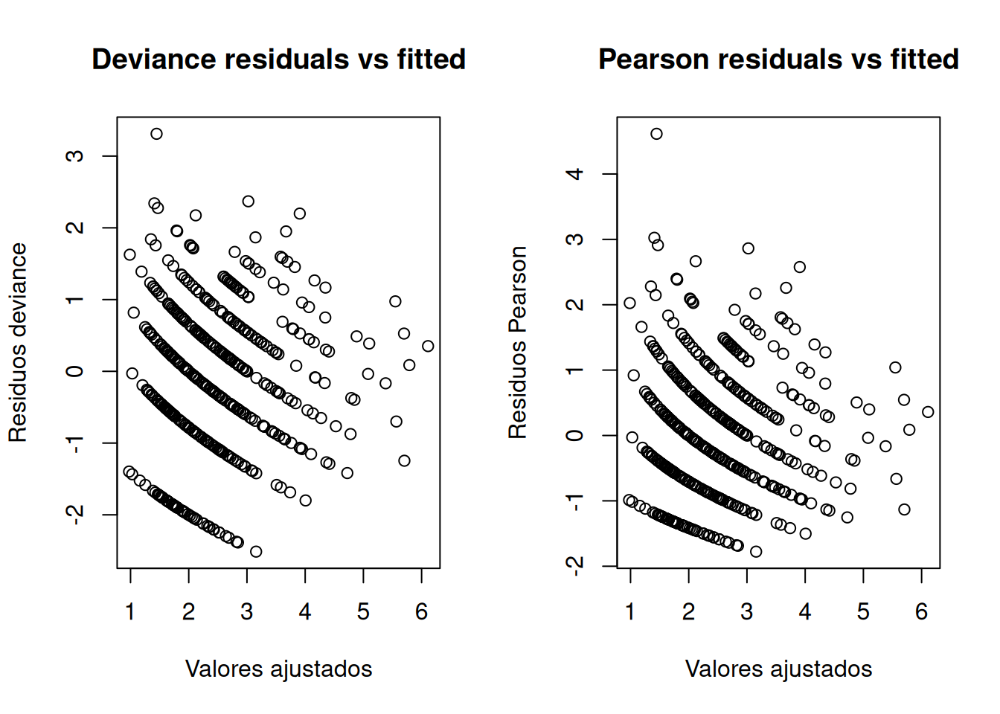
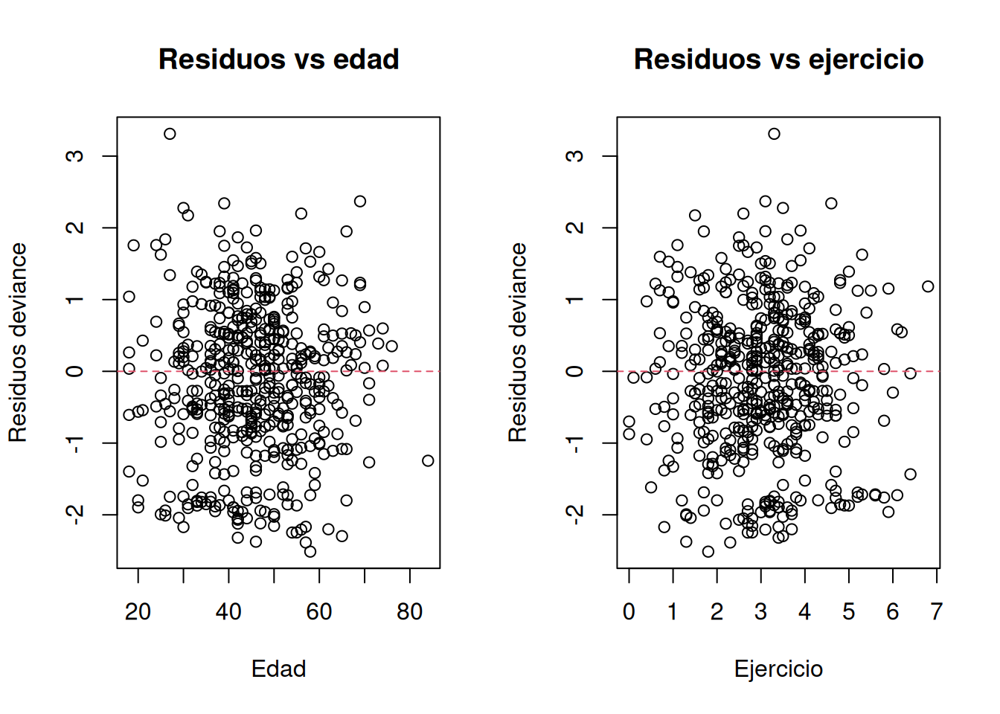
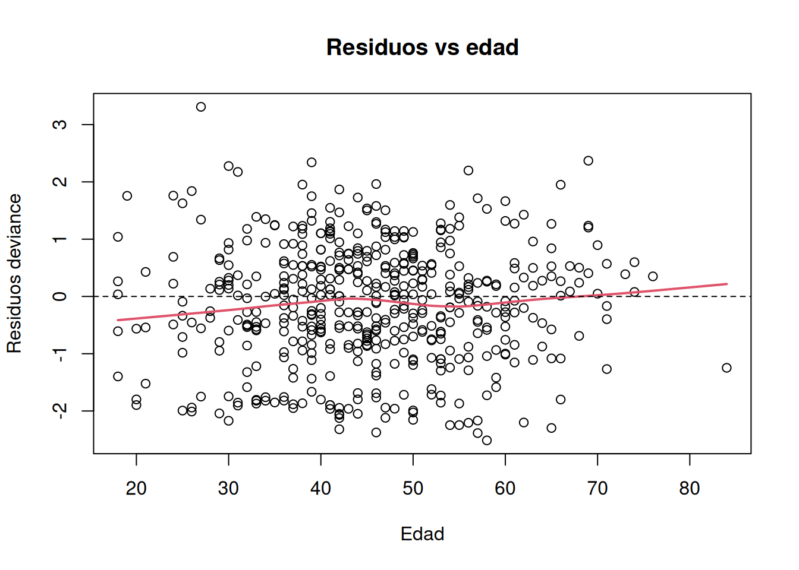
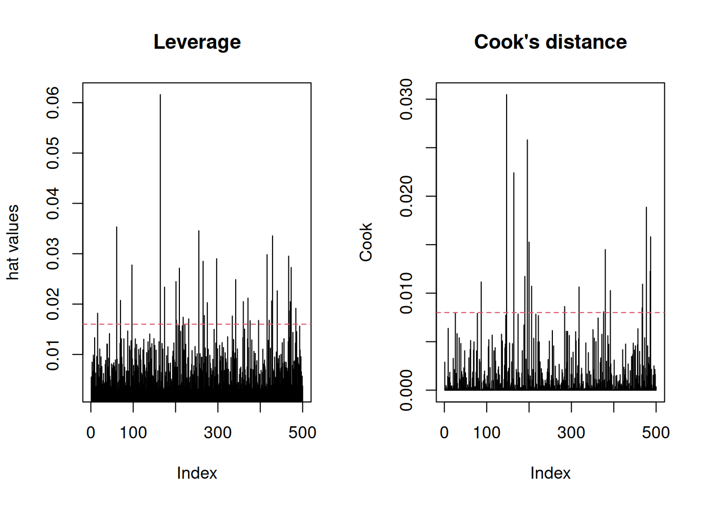
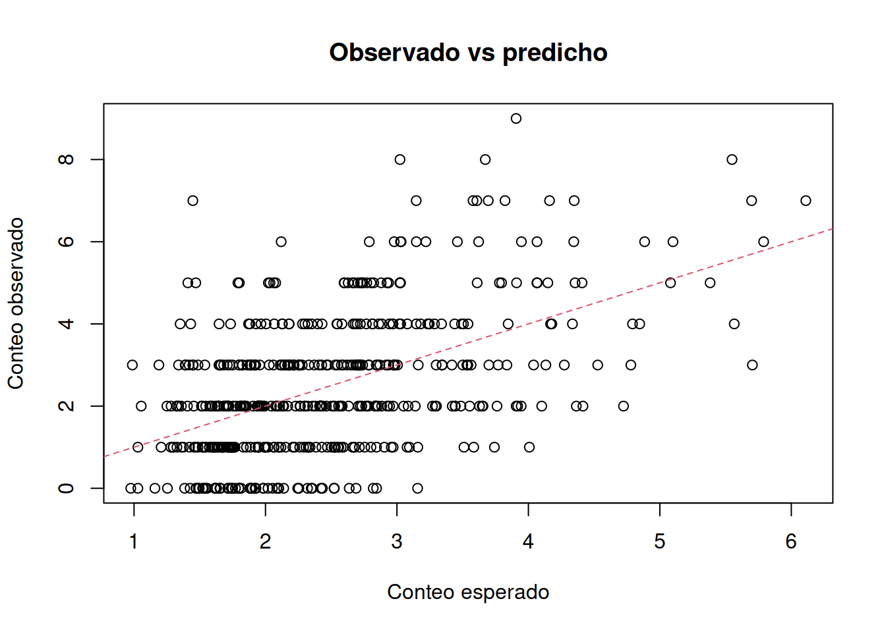
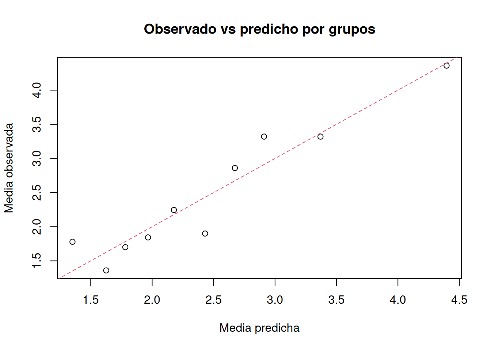

set.seed(123)
# Simulamos los datos
n <- 500
edad <- round(rnorm(n, mean = 45, sd = 12))
edad[edad < 18] <- 18
fumador <- factor(sample(c("No", "Si"), n, replace = TRUE, prob = c(0.7, 0.3)))
ejercicio <- round(rnorm(n, mean = 3, sd = 1.2), 1)
ejercicio[ejercicio < 0] <- 0
# Media verdadera en escala log
eta <- 0.6 + 0.015*edad + 0.35*(fumador == "Si") - 0.18*ejercicio
mu <- exp(eta)
# Conteo Poisson
visitas <- rpois(n, lambda = mu)
datos_pois <- data.frame(visitas, edad, fumador, ejercicio)Regresión de Poisson
Supongamos que queremos explicar el número de visitas al médico en un año según: edad, fumador, ejercicio.
Ajustamos el modelo
mod_pois <- glm(visitas ~ edad + fumador + ejercicio,
family = poisson(link = "log"),
data = datos_pois)
summary(mod_pois)
Call:
glm(formula = visitas ~ edad + fumador + ejercicio, family = poisson(link = "log"),
data = datos_pois)
Coefficients:
Estimate Std. Error z value Pr(>|z|)
(Intercept) 0.495387 0.139399 3.554 0.00038 ***
edad 0.016702 0.002402 6.953 3.57e-12 ***
fumadorSi 0.386202 0.058172 6.639 3.16e-11 ***
ejercicio -0.174684 0.024036 -7.268 3.66e-13 ***
---
Signif. codes: 0 '***' 0.001 '**' 0.01 '*' 0.05 '.' 0.1 ' ' 1
(Dispersion parameter for poisson family taken to be 1)
Null deviance: 697.85 on 499 degrees of freedom
Residual deviance: 546.68 on 496 degrees of freedom
AIC: 1778.5
Number of Fisher Scoring iterations: 5El modelo ajustado es de la forma: \[log(\mu_i) = \beta_0 + \beta_1 edad_i + \beta_2 fumador_i + \beta_3 ejercicio_i\] O, equivalentemente, \[\mu_i = \exp(\beta_0 + \beta_1 edad_i + \beta_2 fumador_i + \beta_3 ejercicio_i)\] Para interpretar los coeficientes, hacemos la exponencial. En Poisson, exponencial el coeficiente da un rate ratio \(e^{\beta_j}\).
exp(coef(mod_pois))(Intercept) edad fumadorSi ejercicio
1.6411329 1.0168425 1.4713814 0.8397223 - Como exp(beta_edad)=1.016, por cada año adicional de edad, el número esperado de visitas se multiplica por 1.016 (es decir, aumenta aproximadamente un 1.6%), manteniendo constantes las demás variables
- Como exp(beta_fumadorSi)=1.38, los fumadores tienen una tasa esperada de visitas 1.39 veces la de los no fumadores, ceteris paribus. Es decir, alrededor de un 38% más de visitas esperadas.
- Como exp(beta_ejercicio)=0.82, por cada unidad adicional de ejercicio, la tasa esperada de visitas se multiplica por 0.82, es decir, disminuye alrededor de un 18%, dejando el resto de variables fijas.
Manteniendo constantes las demás variables, cada año adicional de edad se asocia con un incremento del 1.6% en el número esperado de visitas. Los fumadores presentan una tasa esperada de visitas 1.38 veces la de los no fumadores. Cada unidad adicional de ejercicio se asocia con una reducción del 18% en la tasa esperada de visitas.
ntervalos de confianza para rate ratios
exp(confint(mod_pois))Waiting for profiling to be done... 2.5 % 97.5 %
(Intercept) 1.246521 2.1528920
edad 1.012063 1.0216378
fumadorSi 1.312215 1.6484079
ejercicio 0.801021 0.8801618En formato tabla:
resultado <- cbind(
beta = coef(mod_pois),
RR = exp(coef(mod_pois)),
IC_inf = exp(confint(mod_pois)[,1]),
IC_sup = exp(confint(mod_pois)[,2])
)Waiting for profiling to be done...
Waiting for profiling to be done...print(resultado) beta RR IC_inf IC_sup
(Intercept) 0.49538679 1.6411329 1.246521 2.1528920
edad 0.01670221 1.0168425 1.012063 1.0216378
fumadorSi 0.38620170 1.4713814 1.312215 1.6484079
ejercicio -0.17468405 0.8397223 0.801021 0.8801618Predicciones
Predicción de medias esperadas
predict(mod_pois, type = "response")[1:10] 1 2 3 4 5 6 7 8
1.338550 1.994305 2.548399 2.925404 3.246173 2.977693 2.717543 1.660864
9 10
2.741645 1.962776 Esto devuelve \(\hat{\mu}_i\), esto es, el número esperado de visitas para cada observación.
Predicción para perfiles concretos
nuevo <- data.frame(
edad = c(30, 30, 60, 60),
fumador = factor(c("No", "Si", "No", "Si"), levels = levels(datos_pois$fumador)),
ejercicio = c(2, 2, 2, 2)
)
pred <- predict(mod_pois, newdata = nuevo, type = "response")
cbind(nuevo, visitas_esperadas = pred) edad fumador ejercicio visitas_esperadas
1 30 No 2 1.909965
2 30 Si 2 2.810287
3 60 No 2 3.152359
4 60 Si 2 4.638323¡Muy interpretable!
Diagnóstico
Aquí no miramoss normalidad de residuos como en lineal. Lo importante suele ser:
- forma funcional
- residuos
- puntos influyentes
- sobredispersión
- exceso de ceros
- comparación observado vs predicho
Residuos deviance y Pearson
res_dev <- residuals(mod_pois, type = "deviance")
res_pear <- residuals(mod_pois, type = "pearson")
ajustados <- fitted(mod_pois)
par(mfrow = c(1, 2))
plot(ajustados, res_dev,
xlab = "Valores ajustados",
ylab = "Residuos deviance",
main = "Deviance residuals vs fitted")
plot(ajustados, res_pear,
xlab = "Valores ajustados",
ylab = "Residuos Pearson",
main = "Pearson residuals vs fitted")
par(mfrow = c(1, 1))¿Cómo interpretarlos? Buscamos:
- puntos muy extremos
- patrones sistemáticos
- curvatura o grupos raros
- mucha dispersión creciente no explicada
Lo que preocupa no es que “no se vea nube normal”, sino residuos muy grandes o un patrón claro de mala especificación
Forma funcional En Poisson, el supuesto es que el log de la media es lineal en los predictores:
\[\log(\mu_i) = x_i^T \beta\]
Por tanto, hay que revisar si edad y ejercicio deberían entrar de forma no lineal. Para ellos, comparamos con términos cuadráticos.
mod_pois_quad <- glm(visitas ~ edad + I(edad^2) + fumador + ejercicio + I(ejercicio^2),
family = poisson(link = "log"),
data = datos_pois)
anova(mod_pois, mod_pois_quad, test = "Chisq")Analysis of Deviance Table
Model 1: visitas ~ edad + fumador + ejercicio
Model 2: visitas ~ edad + I(edad^2) + fumador + ejercicio + I(ejercicio^2)
Resid. Df Resid. Dev Df Deviance Pr(>Chi)
1 496 546.68
2 494 546.46 2 0.21668 0.8973Como el modelo con cuadrados mejora mucho, sospechamos no linealidad.
Residuos contra cada predictor
par(mfrow = c(1, 2))
plot(datos_pois$edad, res_dev,
xlab = "Edad", ylab = "Residuos deviance",
main = "Residuos vs edad")
abline(h = 0, lty = 2, col = 2)
plot(datos_pois$ejercicio, res_dev,
xlab = "Ejercicio", ylab = "Residuos deviance",
main = "Residuos vs ejercicio")
abline(h = 0, lty = 2, col = 2)
par(mfrow = c(1, 1))Podemos añadir una curva suavizada por si nos ayuda.
plot(datos_pois$edad, res_dev,
xlab = "Edad", ylab = "Residuos deviance",
main = "Residuos vs edad")
lines(lowess(datos_pois$edad, res_dev), lwd = 2, col = 2)
abline(h = 0, lty = 2)
Observaciones influyentes
hat_vals <- hatvalues(mod_pois)
cook_vals <- cooks.distance(mod_pois)
par(mfrow = c(1, 2))
plot(hat_vals, type = "h", main = "Leverage", ylab = "hat values")
abline(h = 2*mean(hat_vals), lty = 2, col = 2)
plot(cook_vals, type = "h", main = "Cook's distance", ylab = "Cook")
abline(h = 4/nrow(datos_pois), lty = 2, col = 2)
par(mfrow = c(1, 1))Casos que podrían ser problemáticos:
which(hat_vals > 2*mean(hat_vals)) 16 61 70 97 164 174 201 202 209 218 231 255 265 268 275 297 334 342 360 371
16 61 70 97 164 174 201 202 209 218 231 255 265 268 275 297 334 342 360 371
376 396 416 421 427 429 440 467 468 471 473 484
376 396 416 421 427 429 440 467 468 471 473 484 which(cook_vals > 4/nrow(datos_pois)) 87 147 164 190 196 200 206 284 318 376 380 392 467 468 477 486 487
87 147 164 190 196 200 206 284 318 376 380 392 467 468 477 486 487 idx <- which(cook_vals > 4/nrow(datos_pois))
datos_pois[idx, ] visitas edad fumador ejercicio
87 7 58 No 0.9
147 7 27 No 3.3
164 3 84 No 0.9
190 5 39 No 4.6
196 8 69 No 3.1
200 6 31 No 1.5
206 7 39 Si 1.1
284 7 42 Si 2.5
318 5 30 No 3.5
376 3 38 Si 6.8
380 5 24 No 1.1
392 4 19 No 2.6
467 8 54 Si 0.4
468 1 66 No 1.2
477 8 66 No 1.7
486 7 54 No 0.7
487 9 56 Si 2.6Sobredispersión Esto es clave en regresión de Poisson. Poisson supone \(Var(Y_i|X)=\mu_i\). Pero en datos reales muchas veces ocurre que \(Var(Y_i|X)>\mu_i\). Esto es sobredispersión.
Una medida rápida con residuos de Pearson es:
dispersion <- sum(residuals(mod_pois, type = "pearson")^2) / mod_pois$df.residual
dispersion[1] 0.9666187Si está cerca de 1 es razonable, hasta 1.5 consideramos que quizás hay algo de sobredispersión, mayor de 1.5 ya consideramos que hay un problema claro.
También podemos estudiar la sobredispersión con deviance/gl:
mod_pois$deviance / mod_pois$df.residual[1] 1.102179¿Qué hacemos si hay sobredispersión? Podemos utilizar la Quasipoisson que mantiene la media pero corrige los errores estándar.
mod_quasi <- glm(visitas ~ edad + fumador + ejercicio,
family = quasipoisson(link = "log"),
data = datos_pois)
summary(mod_quasi)
Call:
glm(formula = visitas ~ edad + fumador + ejercicio, family = quasipoisson(link = "log"),
data = datos_pois)
Coefficients:
Estimate Std. Error t value Pr(>|t|)
(Intercept) 0.495387 0.137053 3.615 0.000332 ***
edad 0.016702 0.002362 7.072 5.21e-12 ***
fumadorSi 0.386202 0.057193 6.753 4.07e-11 ***
ejercicio -0.174684 0.023631 -7.392 6.19e-13 ***
---
Signif. codes: 0 '***' 0.001 '**' 0.01 '*' 0.05 '.' 0.1 ' ' 1
(Dispersion parameter for quasipoisson family taken to be 0.9666188)
Null deviance: 697.85 on 499 degrees of freedom
Residual deviance: 546.68 on 496 degrees of freedom
AIC: NA
Number of Fisher Scoring iterations: 5Otra opción es usar la binomial negativa.
library(MASS)
mod_nb <- glm.nb(visitas ~ edad + fumador + ejercicio,
data = datos_pois)Warning in theta.ml(Y, mu, sum(w), w, limit = control$maxit, trace =
control$trace > : iteration limit reached
Warning in theta.ml(Y, mu, sum(w), w, limit = control$maxit, trace =
control$trace > : iteration limit reachedsummary(mod_nb)
Call:
glm.nb(formula = visitas ~ edad + fumador + ejercicio, data = datos_pois,
init.theta = 24234.94709, link = log)
Coefficients:
Estimate Std. Error z value Pr(>|z|)
(Intercept) 0.495388 0.139407 3.554 0.00038 ***
edad 0.016702 0.002402 6.953 3.58e-12 ***
fumadorSi 0.386201 0.058176 6.639 3.17e-11 ***
ejercicio -0.174684 0.024037 -7.267 3.67e-13 ***
---
Signif. codes: 0 '***' 0.001 '**' 0.01 '*' 0.05 '.' 0.1 ' ' 1
(Dispersion parameter for Negative Binomial(24234.95) family taken to be 1)
Null deviance: 697.79 on 499 degrees of freedom
Residual deviance: 546.63 on 496 degrees of freedom
AIC: 1780.5
Number of Fisher Scoring iterations: 1
Theta: 24235
Std. Err.: 199836
Warning while fitting theta: iteration limit reached
2 x log-likelihood: -1770.471 Se suelen comparar ambos modelos con el AIC:
AIC(mod_pois, mod_nb) df AIC
mod_pois 4 1778.466
mod_nb 5 1780.471Si el AIC de la binomial negativa, es mejor usar dicha distribución.
Observado vs predicho Nos sirve para verificar si el modelo reproduce bien el nivel medio.
plot(fitted(mod_pois), datos_pois$visitas,
xlab = "Conteo esperado",
ylab = "Conteo observado",
main = "Observado vs predicho")
abline(0, 1, col = 2, lty = 2)
También podemos agrupar por deciles del ajustado:
datos_pois$grupo <- cut(fitted(mod_pois),
breaks = quantile(fitted(mod_pois), probs = seq(0, 1, 0.1)),
include.lowest = TRUE)
comparacion <- aggregate(cbind(obs = visitas, pred = fitted(mod_pois)) ~ grupo,
data = datos_pois,
FUN = mean)
print(comparacion) grupo obs pred
1 [0.975,1.53] 1.780000 1.351651
2 (1.53,1.71] 1.360000 1.626414
3 (1.71,1.88] 1.700000 1.781565
4 (1.88,2.07] 1.843137 1.966624
5 (2.07,2.3] 2.244898 2.177159
6 (2.3,2.55] 1.900000 2.430881
7 (2.55,2.78] 2.860000 2.673566
8 (2.78,3.04] 3.320000 2.910502
9 (3.04,3.67] 3.320000 3.369930
10 (3.67,6.11] 4.360000 4.395918plot(comparacion$pred, comparacion$obs,
xlab = "Media predicha",
ylab = "Media observada",
main = "Observado vs predicho por grupos")
abline(0, 1, col = 2, lty = 2)
Exceso de ceros
mean(datos_pois$visitas == 0)[1] 0.124mean(dpois(0, lambda = fitted(mod_pois)))[1] 0.1142806La primera línea nos da la proporción observada de ceros y la segunda, la proporción media de ceros esperada por el modelo. Si la proporción observada es mucho mayor, podemos sospechar exceso de ceros.
Comparación con modelo nulo
mod_nulo <- glm(visitas ~ 1,
family = poisson(link = "log"),
data = datos_pois)
anova(mod_nulo, mod_pois, test = "Chisq")Analysis of Deviance Table
Model 1: visitas ~ 1
Model 2: visitas ~ edad + fumador + ejercicio
Resid. Df Resid. Dev Df Deviance Pr(>Chi)
1 499 697.85
2 496 546.68 3 151.17 < 2.2e-16 ***
---
Signif. codes: 0 '***' 0.001 '**' 0.01 '*' 0.05 '.' 0.1 ' ' 1Nos dice si el modelo con covariables mejora frente al modelo con solo intercepto.